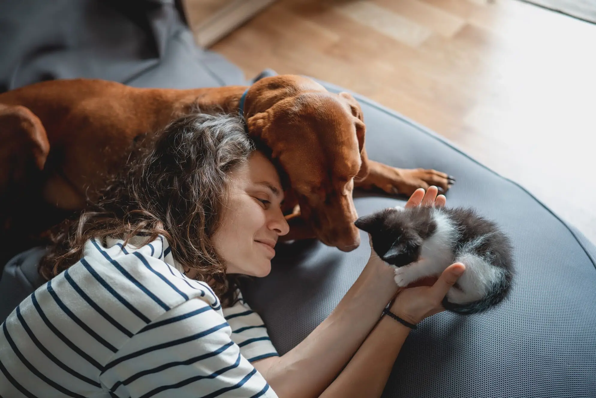

Centro de Adopción de Animales La Turra
Descubre en Kiwoko Adopción la oportunidad de darle un hogar y mucho amor a quienes más lo necesitan. Nuestros animales buscan una segunda oportunidad, y tú puedes ser parte de ese cambio. Cada adopción no solo transforma la vida del peludo que acoge una familia, también llena de alegría y cariño a quienes deciden abrirles la puerta de su casa. ¡Adopta, cambia una vida y deja que la tuya se llene de compañía, ternura y felicidad sin límites!
Acceso a Kiwoko AdoptaAdopción
En Kiwoko existen cuatro tipos de animales a adoptar:
- Perros
- Gatos
- Tortugas
- Conejos
Tabla de Animales
En el Centro de Adopción de Animales La Turra trabajamos cada día para darles una segunda oportunidad a perros y gatos que buscan hogar. En colaboración con Kiwoko Adopta, unimos fuerzas para ofrecer atención, cariño y el mejor acompañamiento en el proceso de adopción.
Nuestro compromiso es encontrar familias responsables y brindar a cada animal la vida digna y feliz que merece.
A continuación encontraremos los últimos animales acogidos:
| Nº Adopción | Nombre del Animal | Fecha | Foto |
|---|---|---|---|
| 250223-21 | Wolfie | 23/02/25 | Imagen |
| 250216-03 | Matrañas | 16/02/25 | Imagen |
| 250222-01 | RaboLocoModdy | 25/02/22 | Imagen |
| 250823-03 | Truenos | 23/08/25 | Imagen |
¿Te han gustado las imágenes de nuestros peludos?
Cada uno de ellos espera con ilusión un hogar donde recibir cariño y dar todo el amor que llevan dentro. Si quieres adoptar, simplemente deja tus datos en el formulario y nos pondremos en contacto contigo. Todos nuestros perros están vacunados, revisados por veterinarios y listos para integrarse en una familia.
No tengas miedo: son animales nobles, agradecidos y con un corazón enorme. Las fotos de los que ya han sido adoptados son la mejor prueba de que adoptar cambia vidas, tanto la suya como la tuya. ¡Anímate a darles una segunda oportunidad y a ganar un amigo fiel para siempre!